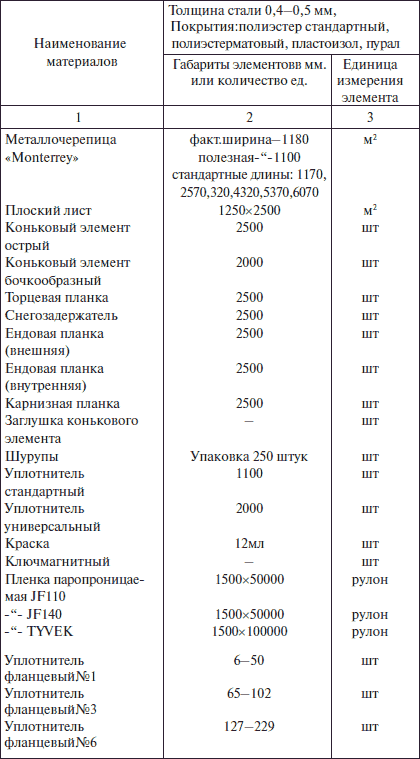
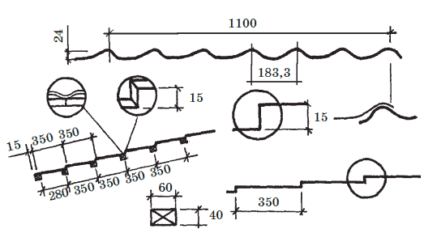
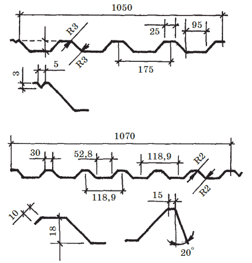

Кровли из металлочерепицы и профнастила.

В последние годы на строительном рынке России можно легко приобрести современное покрытие для кровли, так называемую металлочерепицу. Это листы оцинкованной стали, покрытые полимерными составами. Свою продукцию предлагают фирмы: «Раннила Стил», «Вексман», «Поймикате», «Газеле Профиль» и другие. Например, фирма «Раннила Стил» – это первая фирма в Финляндии, благодаря которой в продаже появились металлические кровельные покрытия с пластиком, имеющие «черепичный рисунок». Такие листы делаются из стали методом штамповки или роликовой обработки при непрерывном процессе. При этом технологией гарантируется точное повторение рисунка. В металлочерепице сочетаются традиционно красивый черепичный рисунок и экономичность, которая достигается за счет низкой материалоемкости кровельных длинномерных листов промышленного изготовления и несложного монтажа.
Исходным материалом в металлочерепице является холоднокатанная сталь толщиной 0,5 мм. После прокатки стальной лист подвергается горячей оцинковке с двух сторон, при этом поверхность становится устойчивой к воздействию коррозии и восприимчивой к выполнению следующего слоя методом пассивации. На пассивированную поверхность наносится защитная краска праймер и затем – слой пластика, выдерживающий воздействие солнечных лучей и колебаний температур.
В качестве пластикового слоя используются пластизол ПХВ, ПВХ 2, полиэфир или акрил, которые наносят на основе при высоких температурах. Лучшую стойкость к воздействию механических нагрузок и промышленных загрязнений воздуха имеют ПХВ, ПВХ2.
Металлочерепица выпускается фирмами-производителями с массой 1 м покрытия не выше 5 кг и разных цветов – всего около 30 цветов и оттенков. Стоимость 1 м кровли с учетом ее высокого качества и долговечности вполне сопоставима со стоимостью кровли, изготовленной традиционными способами.
Кровля из металлочерепицы легко и быстро монтируется как из готовых листов длиной до 7 м., так и из картин, которые выполняются на специальной установке ( рис. 15). В магазинах можно приобрести не только металлочерепицу, но и все необходимые комплектующие материалы по перечню объединения Центросталь-Домсталь табл. 8.
Таблица 8. Перечень комплектующих материалов для устройства кровельных покрытий из металлочерепицы
Отпускается профнастил ЗАО Центросталь-Домсталь (г. Москва), финской фирмой ИаппИа, ООО «НМК-Строй» (г. Москва). ООО «Кроста» (г. Москва), ООО «НМК-Кроста» (г. Москва) и др.

Рис. 15. Металлочерепица
На заметку
Кроме металлочерепицы в России и за рубежом выпускается много различного профнастила, используемого как для кровель, так и для стен промышленных зданий, в том числе и арочные формы различных радиусов. Выбор формы профнастила, цвета и пластиковых покрытий велик. Профильные листы имеют либо стандартную длину, либо могут быть нарезаны по длине ската, благодаря чему можно избежать поперечных соединений, достичь экономии материала и большей надежности кровли.
Профнастил изготовлен из гофрированной оцинкованной жести с многослойным покрытием, что гарантирует высокое качество материала и его долговечность. Фирмы обеспечивают комплектующими деталями, крепежными болтами, красками ( рис. 16).

Рис. 16. Профнастил кровельный